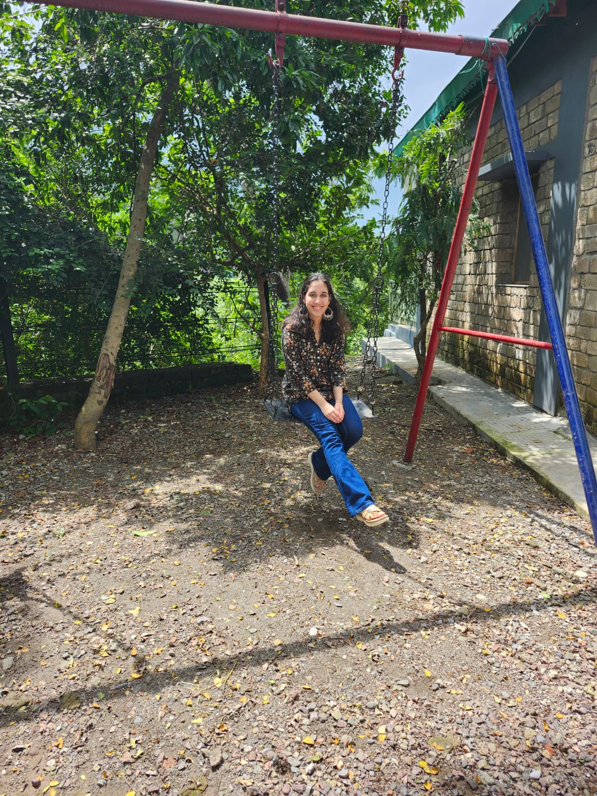

Hi there! My name is Tanisha and I am a senior at UC San Diego majoring in Cognitive and Behavioral Neuroscience with a minor in Data Science.
I am excited by the potential of data-driven approaches to unravel the complexities of the brain, and applying these insights to improving mental health outcomes.
I am currently building a mood and wellness tracking web app - "Moodicle" to help individuals monitor and manage their mental health. It uses NLP techniques to analyze journal entries and provide insights into mood patterns. It also has a built-in mental health support chatbot that offers coping strategies and resources based on user input. It also includes a wellness activity tracker to encourage positive habits and routines. Outside of academics, I enjoy creative writing, listening to music, and (very specifically) learning about the etymology of names!
">